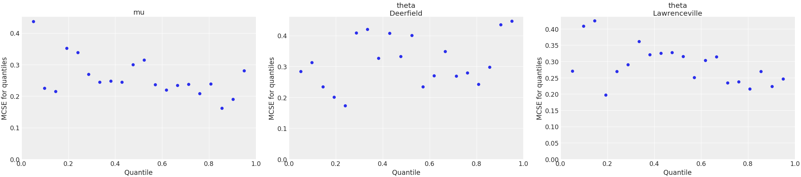

arviz.plot_mcse¶
-
arviz.plot_mcse(idata, var_names=None, coords=None, errorbar=False, figsize=None, textsize=None, extra_methods=False, rug=False, rug_kind='diverging', n_points=20, ax=None, rug_kwargs=None, extra_kwargs=None, text_kwargs=None, backend=None, backend_kwargs=None, show=None, **kwargs)[source]¶ Plot quantile or local Monte Carlo Standard Error.
- Parameters
- idataobj
Any object that can be converted to an az.InferenceData object Refer to documentation of az.convert_to_dataset for details
- var_nameslist of variable names, optional
Variables to be plotted.
- coordsdict, optional
Coordinates of var_names to be plotted. Passed to Dataset.sel
- errorbarbool, optional
Plot quantile value +/- mcse instead of plotting mcse.
- figsizetuple, optional
Figure size. If None it will be defined automatically.
- textsize: float, optional
Text size scaling factor for labels, titles and lines. If None it will be autoscaled based on figsize.
- extra_methodsbool, optional
Plot mean and sd MCSE as horizontal lines. Only taken into account when
errorbar=False.- rugbool
Plot rug plot of values diverging or that reached the max tree depth.
- rug_kindbool
Variable in sample stats to use as rug mask. Must be a boolean variable.
- n_pointsint
Number of points for which to plot their quantile/local ess or number of subsets in the evolution plot.
- ax: axes, optional
Matplotlib axes or bokeh figures.
- rug_kwargsdict
kwargs passed to rug plot.
- extra_kwargsdict, optional
kwargs passed to ax.plot for extra methods lines.
- text_kwargsdict, optional
kwargs passed to ax.annotate for extra methods lines labels. It accepts the additional key
xto setxy=(text_kwargs["x"], mcse)- backend: str, optional
Select plotting backend {“matplotlib”,”bokeh”}. Default “matplotlib”.
- backend_kwargs: bool, optional
These are kwargs specific to the backend being used. For additional documentation check the plotting method of the backend.
- showbool, optional
Call backend show function.
- **kwargs
Passed as-is to plt.hist() or plt.plot() function depending on the value of kind.
- Returns
- axesmatplotlib axes or bokeh figures
References
Vehtari et al. (2019) see https://arxiv.org/abs/1903.08008
Examples
Plot quantile Monte Carlo Standard Error.
>>> import arviz as az >>> idata = az.load_arviz_data("centered_eight") >>> coords = {"school": ["Deerfield", "Lawrenceville"]} >>> az.plot_mcse( ... idata, var_names=["mu", "theta"], coords=coords ... )
